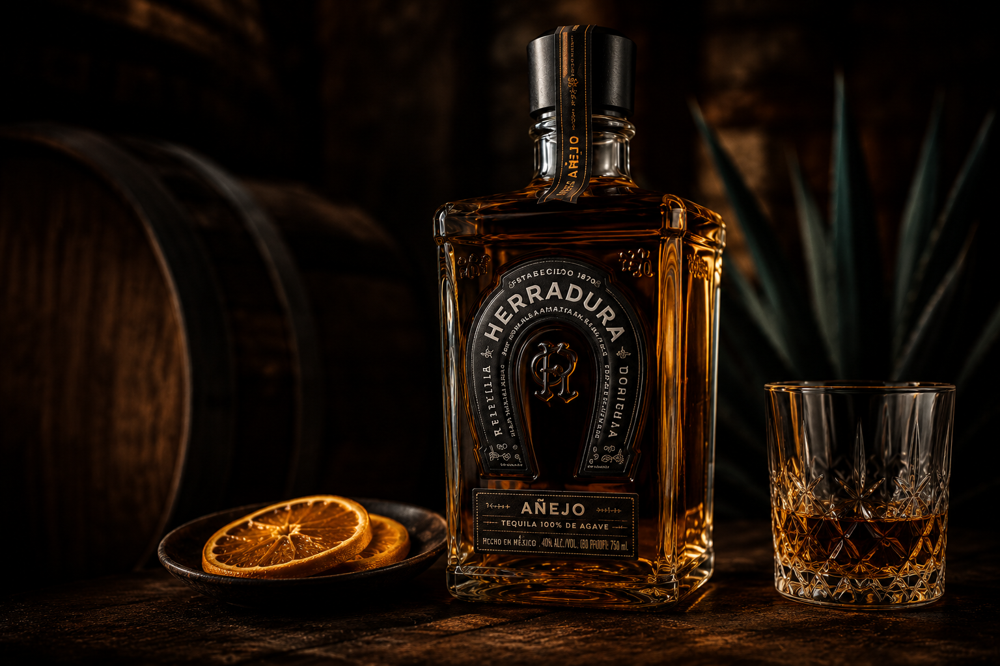
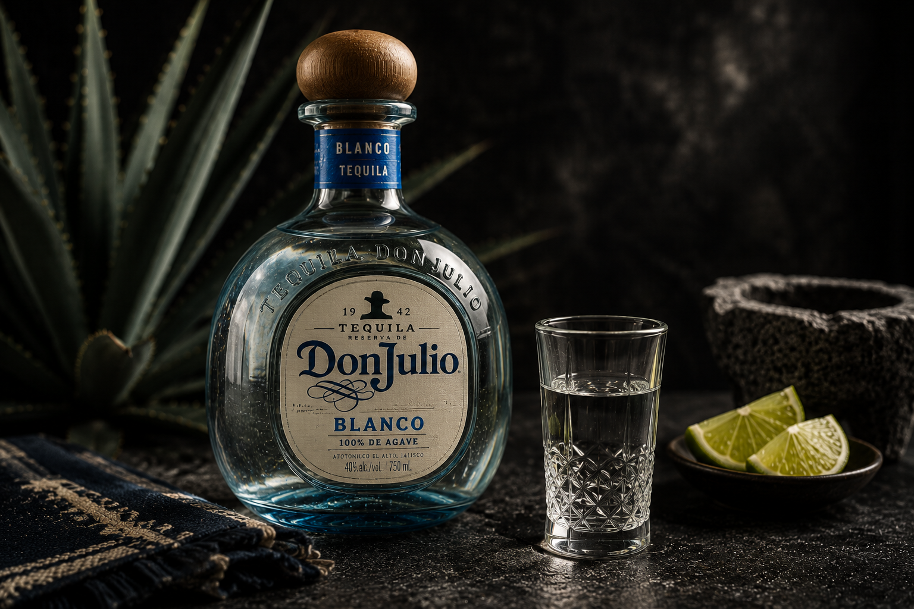

Guia essencial
O que é tequila blanco?
A expressão mais direta do agave azul: sem descanso em barril, sem maquiagem sensorial e com foco na matéria-prima.
Ler conteúdo →Exploramos o universo da tequila com profundidade, respeito e responsabilidade. Reviews sinceros, histórias reais e dados que importam.
Análises sinceras das principais tequilas.
Origens, personagens e bastidores da bebida.
Blanco, reposado, añejo e extra añejo.
Regiões produtoras e terroir.
Vídeos, entrevistas e análises em profundidade.
A expressão mais direta do agave azul: sem descanso em barril, sem maquiagem sensorial e com foco na matéria-prima.
Ler conteúdo →
Uma análise honesta sobre preço, maturação, aroma, paladar e experiência de consumo.
Ler review →
Como uma marca de tequila representou a história de uma família e virou sinônimo de luxo antes do boom da categoria.
Ler análise →
Maturada por 25 meses em carvalho, entrega perfil intenso, especiado e mais complexo que a média da categoria.
Ler review →
Perfil limpo, fresco e elegante. Uma tequila blanco acessível e extremamente versátil.
Ler review →
Entenda por que as tequilas sem passagem por barril revelam mais claramente o terroir do agave.
Ler análise →


A tequila é patrimônio do México. Produzida com 100% agave azul em regiões específicas, ela carrega tradição, cultura, economia, identidade e técnica.
Saiba maisReviews completos, histórias de marcas, curiosidades e conteúdo educativo sobre o universo da tequila.
Tequilas avaliadas
Destilarias pesquisadas
Meta de comunidade
Missão: levar conhecimento